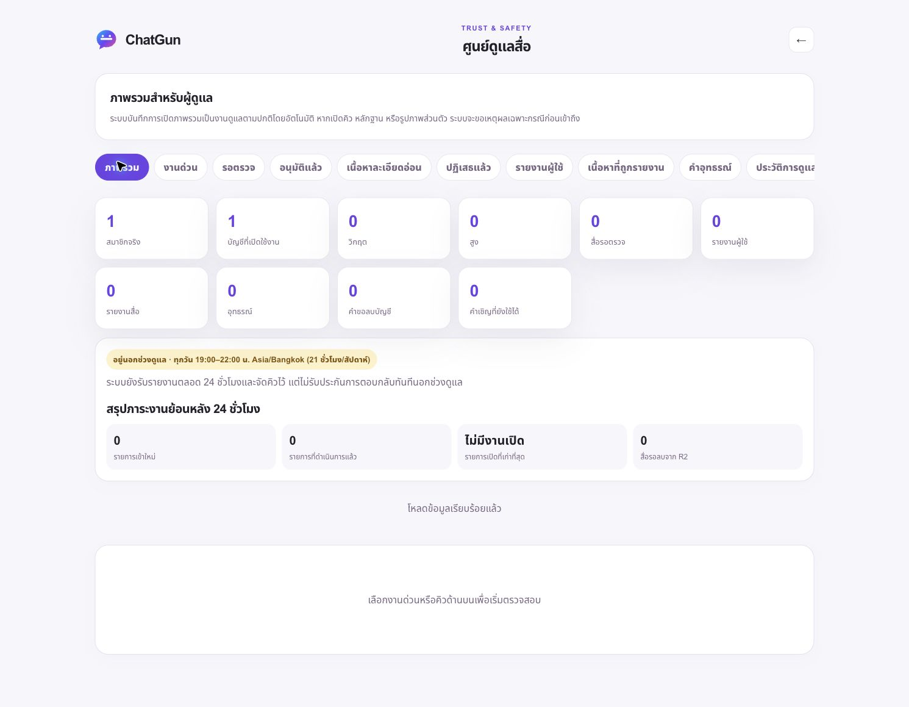

20 ตุลาคม 2026 · Asia/Bangkok · ขอบเขตล่าสุด: เจ้าของเลือกทำ Admin ต่อก่อน ยังไม่มีผู้ทดสอบคนที่สอง
PARTIAL GO — ระบบผู้ดูแลที่ตรวจแล้วเปิดใช้เฉพาะเจ้าของ บริการ Beta ส่วนอื่นยังปิดตามที่กำหนด
เปิดศูนย์ดูแล Production · SHA b45aa4f9d28ca9bb1ec3e1fb22b31bc8b0f331d7 · deployment 118728d1-90ef-45c5-804c-2f270b4ba31b · PR #17 (ไม่ได้ merge)
ฐานข้อมูล Production chatgun-auth อยู่ migration 0015; migration 0016 อยู่เฉพาะฐานทดสอบแยก chatgun-issue13-staging บัคเก็ต Production chatgun-media-production เป็นส่วนตัว ไม่มี public r2.dev/custom domain ไม่แก้ข้อมูล Staging เดิมหรือ PiggyPrice/NEAR
เจ้าของยืนยัน UUID ในช่องทางส่วนตัวและอนุมัติบทบาท report_reviewer + safety_admin 7 วัน หมดอายุ 27/10/2569 11:01:45 Asia/Bangkok มีสอง grant และสอง audit events ไม่สร้างบัญชีใหม่ ไม่ให้ role administration หรือ identity-document reviewer การหมดอายุ/เพิกถอนถูกตรวจฝั่ง server ทุกคำขอ ไม่พึ่งหน้าเว็บหรือ logout
สำรองก่อนให้สิทธิ์และก่อน release ในพื้นที่ส่วนตัว 0700/0600 ทดสอบ restore ใน SQLite และตรวจ FK แล้ว เก็บ Time Travel bookmark เป็นความลับ ไม่ restore Production ไม่สัญญาการลบข้อมูลจาก backup ที่ยังพิสูจน์ไม่ได้
| รายการ | ผล/ข้อจำกัด |
|---|---|
| เจ้าของ LINE login / acceptance / onboarding / session | PASS จากรอบ genuine ก่อนหน้าและ fresh human login รอบนี้ บัญชี/identity/profile ยังคงหนึ่งรายการ ไม่สร้างคำเชิญเพิ่ม |
| Admin overview บัญชีจริง | PASS — actual owner, one real member, empty queues, no manual Purpose · เข้าได้โดยไม่กรอก Purpose มีสมาชิกจริงหนึ่งคน คิวจริงว่าง ไม่มีการเติมข้อมูลจำลอง |
| คิวรายงาน/สื่อ/อุทธรณ์/ประวัติ | BLOCKED — recent authentication exceeded 10 minutes; genuine API denial observed; awaiting manual fresh LINE login · ต้องระบุเหตุผลเฉพาะกรณีและเข้าสู่ระบบใหม่เมื่อเกิน 10 นาที |
| Audit | PASS: grant events 2; routine overview events 2; restricted reads 0 หน้าประวัติแสดงการเข้าถึงและวัตถุประสงค์โดยไม่ส่ง actor/session identifiers |
| Ordinary/anonymous/expired/revoked access | anonymous Production ถูกปฏิเสธจริง สมาชิกธรรมดา/หมดอายุ/เพิกถอนทดสอบผ่าน handlers ใน isolated local fixtures ไม่อ้างว่ามีสมาชิกธรรมดาจริงคนที่สองใน Production |
| อนุมัติ/ปฏิเสธรูปจริง | NOT RUN — ไม่มีรูปจริงและยังปิด uploads ทดสอบ quarantine/reclassification/appeals/permission/deletion ผ่าน unit/integration เท่านั้น ไม่ทำการตัดสินแทนมนุษย์ |
| บทบาทและเอกสารยืนยันตัวตน | PASS regression: safety reviewer เปิด/จัดประเภท/อนุมัติอุทธรณ์เอกสารยืนยันตัวตนไม่ได้ แม้มี review row ผิดชนิด การทดสอบก่อนแก้ให้ผล 200 และหลังแก้ 404 ไม่พบเอกสารดังกล่าวใน Production |
| ระบบสองคน / Discovery / Chat / Online / Gallery | BLOCKED โดยตั้งใจ — เจ้าของยังไม่มีผู้ทดสอบคนที่สองและให้ทำ Admin ก่อน ไม่มีการเปิด flags หรือออกคำเชิญเพิ่ม |
| อุปกรณ์จริง | ยังไม่มี Android Chrome / iPhone Safari จริง การตรวจ 390/768/1440 เป็น viewport ของ Chromium ไม่ใช่การทดสอบเครื่องจริง |
180 unit/integration/security ผ่าน · 16 browser integration ผ่าน · 72 UI regression ผ่าน · 14 Preview checks ผ่าน · 22 Production checks ผ่าน · hash ของไฟล์ HTML/JS/CSS 38 ไฟล์ตรงรุ่น ไม่มี FAIL/SKIP ในชุดปัจจุบัน CI บน deployed SHA
รอบแรกพบข้อความปฏิเสธสิทธิ์ไม่ชัดเจนจากการอ่าน field error แทน message แก้แล้ว ชุดทดสอบ Demo เก่าถูกปรับให้ตรวจว่า Demo ไม่กลับมา แทนการทำให้ระบบกลับไปใช้ข้อมูลปลอม ชุดก่อนแก้/รอบยกเลิกไม่รวมเป็น PASS
มี migration 0016 สำหรับระงับสิทธิ์ Beta ตามรายงาน: ยกเลิก sessions, ล้างตำแหน่ง, เพิกถอนสิทธิ์อัลบั้ม, รับอุทธรณ์หลัง genuine login, บันทึกเหตุผล/revision และแจ้ง conflict หากผู้ตัดสินเดิมทบทวนเอง การคืนสิทธิ์ไม่ทำให้ตำแหน่งหรือสิทธิ์อัลบั้มเก่ากลับมาโดยไม่ขออนุมัติใหม่ Production ปิด ACCOUNT_MODERATION_ENABLED และยังไม่ apply migration นี้ ไม่มีการระงับเจ้าของหรือบัญชีจริงอื่น
การออกคำเชิญยังต้องอนุมัติผู้รับและขอบเขตเป็นรายบุคคล หน้าผู้ดูแลแสดงจำนวนคำเชิญที่ยังใช้ได้เท่านั้น ไม่มีการให้อำนาจเพิ่มคนเอง การลบบัญชีแสดงจำนวนคำขอ ไม่ลบข้อมูลจริงในการทดสอบ
เปิดเฉพาะ MODERATION_TOOLS_ENABLED ตามที่อนุมัติ คงปิด public signup, Discovery, Messaging, Presence, uploads, ratings, identity verification, Sensitive, Google/Facebook, OTP และ Demo ไม่เปลี่ยน secret values หรือเผยแพร่นโยบายใหม่
เวลาดูแลที่อนุมัติ: 19:00–22:00 ทุกวัน Asia/Bangkok (21 ชั่วโมง/สัปดาห์) ไม่มี backup moderator และไม่มีการเฝ้าดู 24 ชั่วโมง ยังต้องกำหนดช่องทางเตือน/สนับสนุน ฉุกเฉิน/กฎหมาย อุทธรณ์ที่มีผู้ตัดสินคนเดียว และขอบเขตนโยบายก่อนเปิดให้บุคคลอื่น ขั้นตอนปฏิบัติและข้อที่รอตัดสินใจ
API-only Functions routing ยังคงอยู่ ลด Gallery polling ในโปรไฟล์สาธารณะที่ไม่มีรูปขณะปิด Chat/Upload (เดิมอ่านได้ 6 ครั้ง/นาที) แต่ไม่ตัดการตรวจสิทธิ์รูป/อัลบั้มส่วนตัวที่ใช้งานจริง หน้าผู้ดูแลไม่มี polling ต่อเนื่อง Snapshot analytics 286 Pages requests เป็นค่าประมาณในช่วง UTC ที่บันทึก ไม่ใช่ billed usage หรือการรับรอง plan entitlement ไม่มีการซื้อ/อัปเกรดหรืออ้างว่ามี paging 24 ชั่วโมง
มีแพ็กเกจ owner pilot ที่ตรวจแล้วก่อนเปิด moderation และแพ็กเกจปิดบริการสำรองไว้ส่วนตัว หากมี critical failure ให้ปิด flag ที่เกี่ยวข้องหรือ deploy รุ่นปลอดภัยโดยรักษา D1/R2 ห้าม drop/reset/ลด schema/ลบผู้ใช้จริงเพื่อแก้ปัญหา

การสั่ง viewport ผ่าน Chrome ไม่เปลี่ยนความกว้างจริง จึงไม่อ้างภาพนี้เป็น 390/768/1440px การทดสอบสามขนาดผ่านใน local Chromium เท่านั้น การจับภาพ Production มือถือ/แท็บเล็ตยัง BLOCKED
D1/สิทธิ์/การตรวจ live · ผล Chrome จริง · หลักฐาน bootstrap ที่ปกปิด ID · หลักฐานสำรอง · สรุปอ่านด้วยเครื่อง